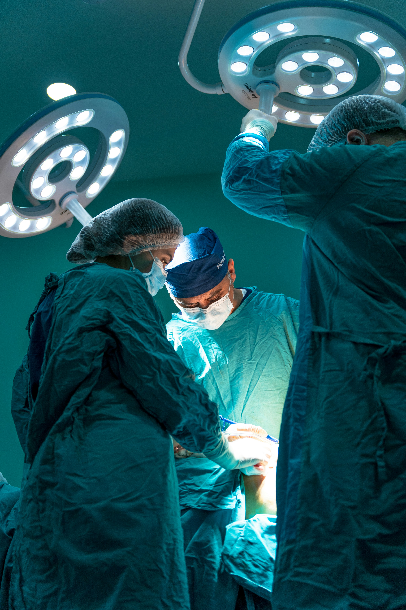

도움이 필요한 환자분들의 든든한 등대가 될 수 있는 내과가 되겠습니다.
병원 센터
의학에서 내시경은 질병의 진단과 치료 목적으로 신체의 내부를 관찰하기 위한 장비이다. 관찰 부위와 목적에 따라 분류되며 관찰 부위에 따른 분류에는 위내시경, 대장내시경, 기관지내시경, 복강경이 있으며 목적에 따라서는 크게 진단내시경과 치료내시경으로 나누어진다.
-

일반 내과
-

건강 검진 센터
-

수술방
-

일반 병실